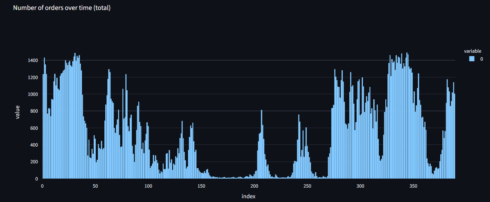

Home
-

-

Hawkes self-exciting process
We will use the standard Hawkes process formula described on the wiki.
in which \(\lambda_i(t)\) is the intensity of event (in this case, contract) \(i\) at time \(t\), and \(\mu\) is the baseline intensity. The second term is the impact on being far/short ITM or OTM (\(\Delta t\) is time-till-expiry in years), and the third iterates for all previous trades that occured for this contract \(i\) by accounting for their volumes (higher volumes means more intensity) and for their time decays. \(\alpha_M\), \(\alpha_t\) and \(w\) are parameters.
We then compute the total intensity (accross all contracts):
\(\Lambda(t)=\sum_{i}\lambda_i(t)\)
and then sample an amount of orders to generate by a Poisson process, with parameter \(\Lambda(t)\cdot\text{dt}\). This is the so-called discrete version of a Hawkes process..
The clear difference with cross-excitation models is that here we don't account for impact of other contract's orders, which is a modelling choice that simplifies the simulation.
Order volume
We use the formula
\(\text{Vol}=\text{Lognormal}(\mu,\sigma)\cdot\text{VolumeBase}\cdot\text{exp}(-\gamma\text{log}(K/S)-\beta\Delta t)\)
Here, \(\mu\) and \(\sigma\) determine the "randomness" of the order volume generation and the exponential factor determines the impact of moneyness and time decay, with \(\beta\) being the time decay parameter, \(\gamma\) the moneyness parameter, \(\text{log}(K/S)\) the moneyness and \(\Delta t\) the time till expiry in years.
Buy and limit order probability distributions
For determining whether an order will be a buy or sell or a limit or not, we use a generalized linear model with the classic logistic function:
\(p_{buy}=1/(1+\text{exp}(-\eta_{buy}))\)
and similarly for the limit order probability.
We determine the coefficients \(\eta_{buy}\) and \(\eta_{limit}\) by using simple linear regression:
\(\eta_{buy}=\beta_0+\beta_1\cdot\text{Imbalance}\)
\(\eta_{limit}=\alpha_0+\alpha_1\cdot\text{Volume}+\alpha_2\cdot\text{Imbalance}\)
Here, the buy probability depends only on the base rate and the volume imbalance of the current orderbook (higher imbalance towards buy side promotes more buy orders), and the limit probatility depends on the base rate, volume imbalance (more imbalance means higher amount of limit orders), and the volume of the trade (higher volume means more likely to be a market order, since large trades tend to be market orders).
Analysis
I've then built a simple Streamlit application to make graphs and such of all the data generated by the simulation.
Hawkes cross-exciting process
In this more complete version of the Hawkes process, we also account for the impact of the orders of other contracts on each contract. The formula we use here sums over all previous trades over all contracts instead of the contract we are considering itself:
where
\(\Delta M=\text{log}(K_j/S)-\text{log}(K_i/S)\)
and
\(\Delta t=T_{i}^\text{expiry}-T_{j}^\text{expiry}\)
This equation accounts for the following things. The first term is the static intensity, depending on the moneyness and expiry date of the contract. The second accounts for the impact over all trades over all contracts. Within the sum, we account for the order's volume, the difference in moneynesses between contracts, the difference in expiry time and how long ago each trade was. We also account for self-excitation: \(\rho_{self}\) boosts intensity if we encounter the contract itself in the sum, and we also account for the difference in impact between put- and call contracts by multiplying by \(\tau_{ij}\).